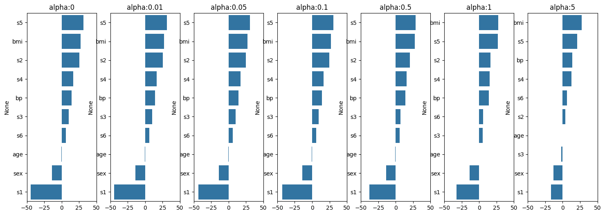
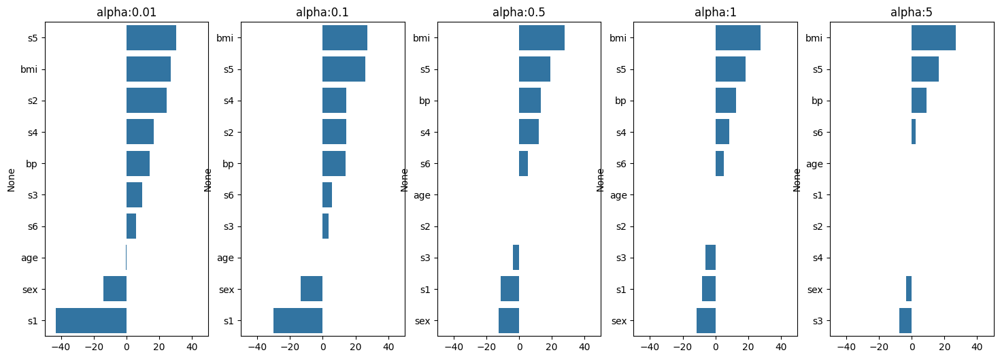

import numpy as np
import matplotlib.pyplot as plt
import pandas as pd
from sklearn.datasets import load_diabetes
from sklearn.linear_model import LinearRegression
from sklearn.model_selection import train_test_split
from sklearn.metrics import mean_squared_error, r2_score1 머신러닝 실습
1.1 Ch2. Linear regression
diabetes = load_diabetes()
diabetes_DF = pd.DataFrame( diabetes['data'], columns=diabetes['feature_names'])
diabetes_DF['Y']=diabetes['target']
diabetes_DF.head(5)| age | sex | bmi | bp | s1 | s2 | s3 | s4 | s5 | s6 | Y | |
|---|---|---|---|---|---|---|---|---|---|---|---|
| 0 | 0.038076 | 0.050680 | 0.061696 | 0.021872 | -0.044223 | -0.034821 | -0.043401 | -0.002592 | 0.019907 | -0.017646 | 151.0 |
| 1 | -0.001882 | -0.044642 | -0.051474 | -0.026328 | -0.008449 | -0.019163 | 0.074412 | -0.039493 | -0.068332 | -0.092204 | 75.0 |
| 2 | 0.085299 | 0.050680 | 0.044451 | -0.005670 | -0.045599 | -0.034194 | -0.032356 | -0.002592 | 0.002861 | -0.025930 | 141.0 |
| 3 | -0.089063 | -0.044642 | -0.011595 | -0.036656 | 0.012191 | 0.024991 | -0.036038 | 0.034309 | 0.022688 | -0.009362 | 206.0 |
| 4 | 0.005383 | -0.044642 | -0.036385 | 0.021872 | 0.003935 | 0.015596 | 0.008142 | -0.002592 | -0.031988 | -0.046641 | 135.0 |
diabetes_DF.info()<class 'pandas.core.frame.DataFrame'>
RangeIndex: 442 entries, 0 to 441
Data columns (total 11 columns):
# Column Non-Null Count Dtype
--- ------ -------------- -----
0 age 442 non-null float64
1 sex 442 non-null float64
2 bmi 442 non-null float64
3 bp 442 non-null float64
4 s1 442 non-null float64
5 s2 442 non-null float64
6 s3 442 non-null float64
7 s4 442 non-null float64
8 s5 442 non-null float64
9 s6 442 non-null float64
10 Y 442 non-null float64
dtypes: float64(11)
memory usage: 38.1 KBy_target = diabetes_DF['Y']
X_data = diabetes_DF.drop(['Y'], axis=1, inplace=False)
X_train, X_test, y_train, y_test = train_test_split(
X_data, y_target, test_size=0.4, random_state=123 )lr = LinearRegression()
lr.fit ( X_train, y_train )LinearRegression()In a Jupyter environment, please rerun this cell to show the HTML representation or trust the notebook.
On GitHub, the HTML representation is unable to render, please try loading this page with nbviewer.org.
LinearRegression()
lr.intercept_151.71551041484278np.round( lr.coef_, decimals=1)array([ -11.1, -291.1, 553.8, 296.6, -915. , 528.4, 210.2, 339.6,
640.6, 115.7])coeff = pd.Series( data= np.round( lr.coef_, decimals=1), index=X_data.columns )
coeff.sort_values(ascending=False)s5 640.6
bmi 553.8
s2 528.4
s4 339.6
bp 296.6
s3 210.2
s6 115.7
age -11.1
sex -291.1
s1 -915.0
dtype: float64y_preds = lr.predict( X_test )
mse = mean_squared_error( y_test, y_preds )
rmse = np.sqrt( mse )
rmse55.09404732888505r2 = r2_score( y_test, y_preds )
r20.4933408690435077y_train_preds = lr.predict( X_train )
mse_train = mean_squared_error( y_train, y_train_preds )
rmse_train = np.sqrt( mse_train )
rmse_train52.9486429330168r2_train = r2_score( y_train, y_train_preds )
r2_train0.5237974491641986from sklearn.model_selection import KFold
kf = KFold(n_splits=5, shuffle=True )
kfid = kf.split(X_data)kf_mse = []
for train_i, test_i in kfid:
X_trn, X_tst = X_data.iloc[train_i], X_data.iloc[test_i]
y_trn, y_tst = y_target.iloc[train_i], y_target.iloc[test_i]
lr = LinearRegression()
lr.fit ( X_trn, y_trn )
y_preds = lr.predict( X_tst )
mse = mean_squared_error( y_tst, y_preds )
kf_mse.append(mse)
kf_mse[2473.5516319387098,
3233.267125885358,
3553.038452271323,
2979.5920996281343,
2621.972092449679]# 잘 안쓰고 아래꺼 K-fold api를 많이 씀
kf_rmse = np.sqrt(kf_mse)
np.mean(kf_rmse)54.398968609104465from sklearn.model_selection import cross_val_score
neg_mse_scores= cross_val_score(lr, X_data, y_target,
scoring='neg_mean_squared_error', cv=5)
rmse_scores = np.sqrt( -1 * neg_mse_scores ) # 지표는 값이 큰 것을 선택하도록 내부적으로 (-) 변환
rmse_scoresarray([52.72497937, 55.03486476, 56.90068179, 54.85204179, 53.94638716])np.mean( rmse_scores )54.69179097275793# 변수 표준화
from sklearn.preprocessing import StandardScaler
scaler = StandardScaler()
dX=diabetes['data']
dy=diabetes['target']
scaler.fit( dX )
diabetes_X_scaled = scaler.transform( dX )
np.round( diabetes_X_scaled[:3], decimals=2 )array([[ 0.8 , 1.07, 1.3 , 0.46, -0.93, -0.73, -0.91, -0.05, 0.42,
-0.37],
[-0.04, -0.94, -1.08, -0.55, -0.18, -0.4 , 1.56, -0.83, -1.44,
-1.94],
[ 1.79, 1.07, 0.93, -0.12, -0.96, -0.72, -0.68, -0.05, 0.06,
-0.55]])from sklearn.linear_model import SGDRegressor
sgd_reg = SGDRegressor ( max_iter=50, penalty=None, eta0=0.1 )
sgd_reg.fit( diabetes_X_scaled, dy )
print(sgd_reg.intercept_, np.round( sgd_reg.coef_, decimals=1), sep="\n")[153.41928257]
[ -0.2 -12.2 23.5 14. -26.7 14.2 2.1 5.7 38.2 2.7]1.2 Ch3. Restricted linear regression
import numpy as np
import matplotlib.pyplot as plt
import pandas as pd
import seaborn as sns
from sklearn.datasets import load_diabetes
diabetes = load_diabetes()
y_target = diabetes['target']
X_data = diabetes['data']# 데이터 분리
from sklearn.model_selection import train_test_split
X_train, X_test, y_train, y_test = train_test_split(
X_data, y_target, test_size=0.4, random_state=123 )# 규제 선형회귀에서는 반드시 표준화를 해야함
from sklearn.preprocessing import StandardScaler
scaler = StandardScaler()
scaler.fit( X_train )
X_train = scaler.transform( X_train )
X_test = scaler.transform( X_test )# Hyperparameter (람다) 튜닝
# Cross validation, 5-fold
from sklearn.linear_model import Ridge
from sklearn.model_selection import cross_val_score
alphas = [0, 0.01, 0.05, 0.1, 0.5, 1, 5]
for al in alphas:
ridge = Ridge(alpha=al)
neg_mse_scores = cross_val_score(ridge, X_train, y_train,
scoring='neg_mean_squared_error', cv=5)
avg_rmse = np.mean(np.sqrt(-1*neg_mse_scores))
print('alpha={} -> RMSE={}'.format(al, np.around(avg_rmse, decimals=3)))alpha=0 -> RMSE=55.733
alpha=0.01 -> RMSE=55.733
alpha=0.05 -> RMSE=55.732
alpha=0.1 -> RMSE=55.731
alpha=0.5 -> RMSE=55.733
alpha=1 -> RMSE=55.745
alpha=5 -> RMSE=55.812ridge = Ridge(alpha=0.1)
ridge.fit( X_train, y_train )
print(ridge.coef_)
print(ridge.intercept_)[ -0.49870018 -13.84726064 27.2454048 14.23003902 -42.90654351
24.39457638 9.53842023 16.72293446 30.53624211 5.88303717]
152.9811320754717# 일반화 성능 평가
y_preds = ridge.predict( X_test )
from sklearn.metrics import mean_squared_error
np.sqrt( mean_squared_error(y_test, y_preds) )55.089852137313954fig, axs = plt.subplots(figsize=(18,6), nrows=1, ncols=len(alphas))
coeff_df = pd.DataFrame()
for pos, al in enumerate(alphas):
ridge = Ridge(alpha=al)
ridge.fit ( X_train, y_train)
coeff = pd.Series(data=ridge.coef_, index=diabetes['feature_names'])
coeff = coeff.sort_values(ascending=False)
colname = 'alpha:'+str(al)
axs[pos].set_title(colname)
axs[pos].set_xlim(-50,50)
sns.barplot( x=coeff.values, y=coeff.index, ax=axs[pos])
coeff_df[colname]=coeff
coeff_df| alpha:0 | alpha:0.01 | alpha:0.05 | alpha:0.1 | alpha:0.5 | alpha:1 | alpha:5 | |
|---|---|---|---|---|---|---|---|
| s5 | 31.138611 | 31.076226 | 30.831553 | 30.536242 | 28.526648 | 26.658856 | 20.679753 |
| bmi | 27.225471 | 27.227572 | 27.235733 | 27.245405 | 27.305084 | 27.347486 | 27.247605 |
| s2 | 25.651076 | 25.520922 | 25.010508 | 24.394576 | 20.207359 | 16.324820 | 4.084076 |
| s4 | 16.927558 | 16.906456 | 16.823497 | 16.722934 | 16.023963 | 15.344355 | 12.722315 |
| bp | 14.248636 | 14.246725 | 14.239197 | 14.230039 | 14.165214 | 14.099670 | 13.796797 |
| s3 | 10.239273 | 10.166744 | 9.882164 | 9.538420 | 7.190375 | 4.990229 | -2.289360 |
| s6 | 5.880362 | 5.880633 | 5.881709 | 5.883037 | 5.893123 | 5.904725 | 5.981982 |
| age | -0.508127 | -0.507153 | -0.503328 | -0.498700 | -0.466811 | -0.436305 | -0.321278 |
| sex | -13.873897 | -13.871166 | -13.860395 | -13.847261 | -13.753227 | -13.655907 | -13.164133 |
| s1 | -44.504536 | -44.339080 | -43.690071 | -42.906544 | -37.568138 | -32.593582 | -16.514538 |
# 하이퍼파라미터 튜닝을 자동으로 해주는 함수임
# score를 array로 제공하는것 뿐만 아니라, fold별 평균/분산 계산 및 model selection까지 완수
from sklearn.model_selection import GridSearchCV
parameters={'alpha': [0, 0.01, 0.05, 0.1, 0.5, 1, 5]}
ridge = Ridge( )
grid_ridge = GridSearchCV ( ridge, param_grid=parameters, cv=5,
scoring='neg_mean_squared_error',refit=True)
grid_ridge.fit( X_train, y_train )
scores_df = pd.DataFrame( grid_ridge.cv_results_)
scores_df.iloc [:, 5:]
# test score는 validation data로 평가한 score(-mse)임
# std는 split별 score의 표준편차| params | split0_test_score | split1_test_score | split2_test_score | split3_test_score | split4_test_score | mean_test_score | std_test_score | rank_test_score | |
|---|---|---|---|---|---|---|---|---|---|
| 0 | {'alpha': 0} | -3464.061113 | -3073.496800 | -2249.443435 | -3714.684946 | -3135.462679 | -3127.429794 | 496.391499 | 6 |
| 1 | {'alpha': 0.01} | -3463.952339 | -3072.933041 | -2249.812087 | -3714.461827 | -3135.734131 | -3127.378685 | 496.206755 | 4 |
| 2 | {'alpha': 0.05} | -3463.536751 | -3070.771202 | -2251.269676 | -3713.589310 | -3136.808917 | -3127.195171 | 495.480636 | 3 |
| 3 | {'alpha': 0.1} | -3463.057920 | -3068.263953 | -2253.053928 | -3712.540867 | -3138.126372 | -3127.008608 | 494.600544 | 2 |
| 4 | {'alpha': 0.5} | -3460.381708 | -3053.879193 | -2265.950063 | -3705.435057 | -3147.526552 | -3126.634515 | 488.447499 | 1 |
| 5 | {'alpha': 1} | -3458.580847 | -3044.029474 | -2279.280902 | -3698.531771 | -3156.575986 | -3127.399796 | 482.282104 | 5 |
| 6 | {'alpha': 5} | -3451.286784 | -3025.938931 | -2341.662894 | -3662.319607 | -3180.549641 | -3132.351571 | 451.978114 | 7 |
# Random split 후에 튜닝하므로 위와 최적파라미터가 달라질 수 있음.
print(grid_ridge.best_params_)
print(grid_ridge.best_score_){'alpha': 0.5}
-3126.6345147986067ridge_update = grid_ridge.best_estimator_
ridge_update.coef_array([ -0.46681102, -13.75322724, 27.30508411, 14.16521425,
-37.56813822, 20.20735883, 7.19037502, 16.02396254,
28.52664799, 5.89312283])y_pred = ridge_update.predict( X_test )
np.sqrt( mean_squared_error(y_test, y_preds) )55.089852137313954from sklearn.linear_model import Lasso
alphas = [0.01, 0.1, 0.5, 1, 5]
fig, axs = plt.subplots(figsize=(18,6), nrows=1, ncols=len(alphas))
coeff_df = pd.DataFrame()
for pos, al in enumerate(alphas):
lasso = Lasso( alpha=al, max_iter=1000 )
lasso.fit ( X_train, y_train)
coeff = pd.Series(data=lasso.coef_, index=diabetes['feature_names'])
coeff = coeff.sort_values(ascending=False)
colname = 'alpha:'+str(al)
axs[pos].set_title(colname)
axs[pos].set_xlim(-50,50)
sns.barplot( x=coeff.values, y=coeff.index, ax=axs[pos])
coeff_df[colname]=coeff
coeff_df| alpha:0.01 | alpha:0.1 | alpha:0.5 | alpha:1 | alpha:5 | |
|---|---|---|---|---|---|
| s5 | 30.609704 | 25.856091 | 18.926493 | 18.536744 | 16.632402 |
| bmi | 27.241961 | 27.390066 | 27.770736 | 27.646424 | 27.100696 |
| s2 | 24.527593 | 14.429899 | 0.000000 | -0.000000 | -0.000000 |
| s4 | 16.680089 | 14.454782 | 12.209271 | 8.424945 | 0.000000 |
| bp | 14.221648 | 13.978915 | 13.382554 | 12.793145 | 8.933273 |
| s3 | 9.557877 | 3.432768 | -3.656929 | -6.063158 | -7.745877 |
| s6 | 5.870014 | 5.776940 | 5.495434 | 5.087787 | 2.467916 |
| age | -0.486420 | -0.291130 | -0.000000 | -0.000000 | 0.000000 |
| sex | -13.844396 | -13.579080 | -12.450801 | -11.420067 | -3.496842 |
| s1 | -43.043735 | -29.913885 | -11.357006 | -8.203584 | -0.000000 |